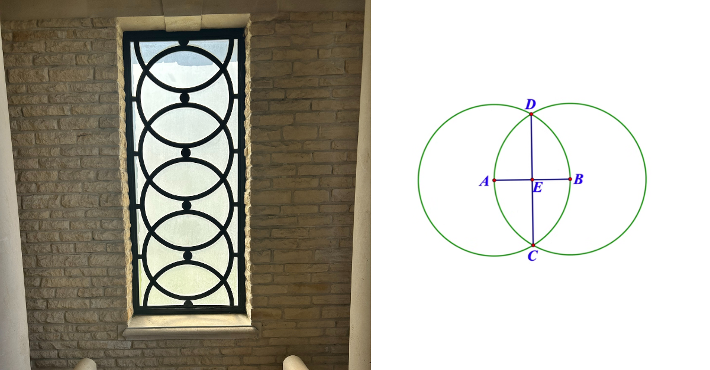

🌸 Sacred Geometry in School: Vesica Piscis, Pentagrams & Pedagogy

When a server crashes, most of us curse and wait for IT. Yesterday, when our Timetable app went down, I opened GitHub.
By 5 p.m., I’d built a living prototype for Haven Cloud—calendar, parent hub, “join class” flows, attendance and portfolio pages. I cried when it ran. Not for the code, but because the geometry of my work finally closed its loop.


This morning I showed it to Gerry Docherty—our mathematician-philosopher. Within minutes we’d drifted from Node.js to Nicomachus, from dashboards to divine proportion. Somewhere between his digital compass and my Normandy memories, we remembered something school quietly forgot:
Mathematics was once a sacred language.
⚪ Where worlds overlap: the Vesica Piscis
Two circles intersect. The almond-shaped space—the Vesica Piscis—has held meaning for centuries: meeting of opposites, spirit and matter. Gerry demonstrated a perpendicular bisector; I saw the same pattern carved into stone at a German cemetery I’d visited with my dad. Geometry as relationship made visible.
⭐ Pentagrams, ratios & reverence
Gerry rotated a point by 72°. Out unfolded a pentagon, then a pentagram, then another within it—each reduced by the golden ratio 1.618… We watched order nest inside freedom.
Pattern doesn’t kill mystery. Pattern protects it.
To teach sacred geometry is to show that truth can be elegant and alive.
🌀 Why this belongs in modern schooling
In the age of instant answers, curiosity risks collapse. Sacred geometry re-awakens three dormant capacities:
Attention as devotion — seeing symmetry, rhythm, imperfection
Pattern as empathy — how forms echo through nature, art, emotion
Connection as curriculum — maths, music, ethics, ecology share ratios
It’s not about religion; it’s about reverence. When a learner hand-draws a pentagon, they practice coherence.
🧩 Now, add Beth: relationships as first geometry
This week I also welcomed Beth Holmes to the Novus Learning Network. Beth is a former SENCO, a historian, and a builder of the thing most edtech forgets: human connection.
During Covid she studied how tutors forged rapport online. From that came a 3-unit training spine for educators:
Building Meaningful Relationships Online
Fostering Community in Virtual Space
Harnessing Student Motivation
Beth’s work clicks perfectly with sacred geometry. If vesicas and pentagrams are the forms of learning, then relationship is the field that lets those forms appear. No connection, no pattern.
“We’re still people—especially when our learners are vulnerable.” — Beth
Beth + Haven: a history pilot, but not as you know it
Beth and I sketched a January mini-pilot for The Haven:
Title: People, Power & Patterns (history skills without the “ugh, history” priming)
Format: 5 weeks · 1 session/week · learner-led inquiries (e.g., Suffragettes; students choose threads)
Method: Beth’s relationship toolkit + sacred-geometry thinking (sources, bias, pattern, proportion)
Outcomes: short showcases; .verse/.know artefacts for learner-owned portfolios; feedback loop to refine
History becomes what it always was: a living pattern of evidence, voice, and care.
🧭 How this sings together (verse-al view)
Our attendance dashboard tracks Energy (E), Coherence (s), and Connection (c²) across days. Sacred geometry teaches the same triad in another key:
E — the effort to draw, rotate, return
s — the proportion that holds truth steady
c² — the relational field (teacher ↔ learner ↔ community)
Maths protects mystery. History protects meaning. Relationship protects both.
✴ Try this in your setting
Start a “Vesica moment”: two-circle starter every Monday—“what two ideas should meet this week?”
Teach a 72° rotation to discover the pentagram; ask: “Where else do we see this proportion?”
Run Beth Holmes’s Mini-Studio: one online circle on rapport and motivation, then co-plan a learner-led inquiry.

🔗 Resources & next steps
Open prototypes: Haven Cloud [DM me for a demo] and Verse-ality OS (lightweight, hyflex-friendly)
Beth’s training (Novacene Press · Gumroad) — launching soon as a product + optional consultancy block
Pilot interest (Jan block): schools who want a 5-week “People, Power & Patterns” taster
Reply if you’d like:
the lesson micro-scripts for Vesica/Pentagram weeks,
Beth’s relationship prompts deck, or
the .verse/.know portfolio schema.
Geometry is the architecture of relationship. Relationship is the atmosphere of learning.
— Kirstin
P.S. Want in?
Join the Novus Learning Network sessions (alt-week timing).
Bring one colleague from maths and one from humanities. Pattern loves company.
First published in Building Schools in the Cloud on LinkedIn, 4 November 2025.